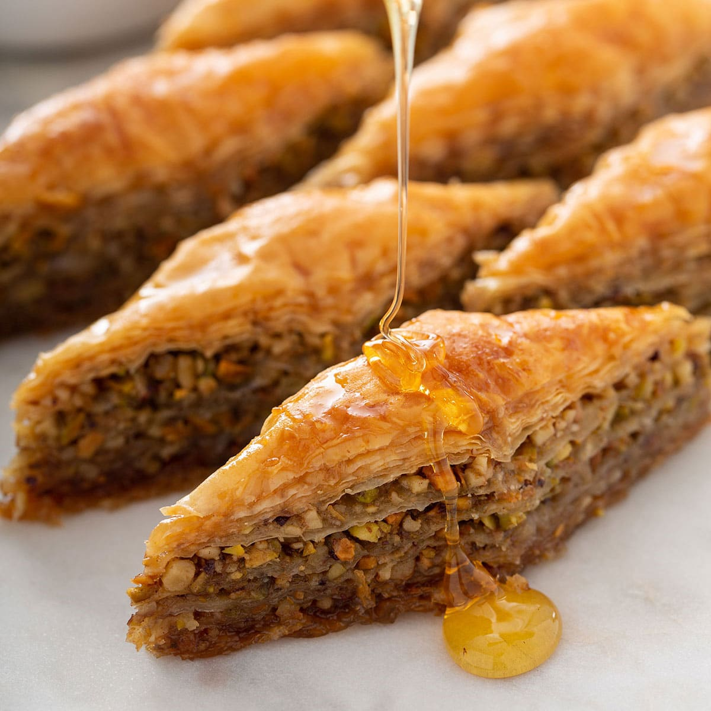

Homemade Salsa

Description
One of the more tedious desserts out there, Baklava is not for the faint of heart to make. Done with proper time and preperation this dessert packs a decadent punch.
Ingredients
Steps
Preheat oven to 350 degress Fahrenheit
In a pan, add sugar and water, heat while occassionally stirring until sugar is dissolved
Stir in honey, orange extract, clove
Bring mixture to boil, then simmer for 25 minutes
Remove syrup from heat, add in lemon juice
Syrup will thicken over time
Blend pistachios, walnuts together
In a mixing bowl, add chopped up nuts along with sugar, cinnamon, and clove
Unroll phyllo dough and place in between two damp towels
Place one sheet of phyllo dough in high rimmed baking sheet, brush on some melted butter, repeat this process until 1/3 of phyllo dough has been used
Place 1/2 the nut mixture across the top layer of phyllo dough
Continue to layer another 1/3 of the phyllo dough
Place the other 1/2 of the nut mixture across the top layer of phyllo dough
Continue to layer the last 1/3 of the phyllo dough
With a sharp knife, cut baklava into small triangular shapes
Place baklava in oven and bake for 25-35 minutes or until golden brown
After baklava has been removed from oven, pour honey syrup over baklava
Return to home page